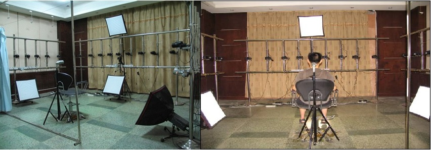
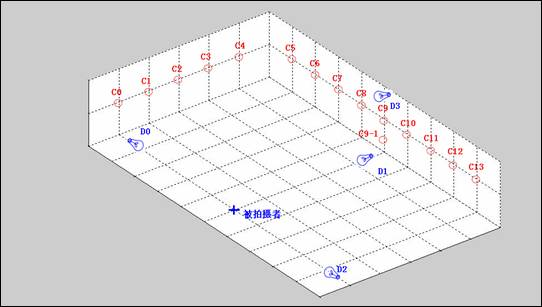
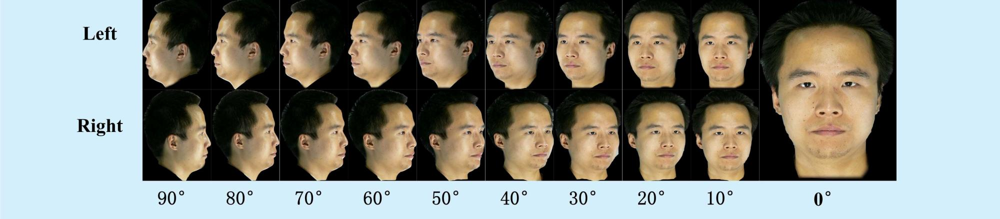
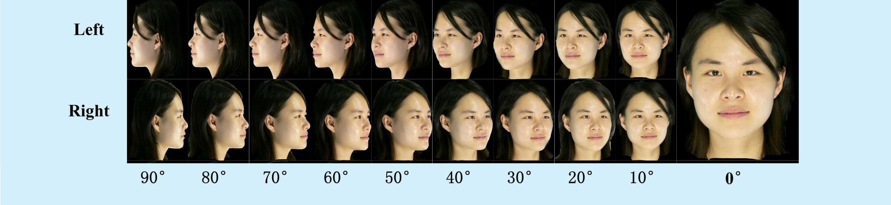
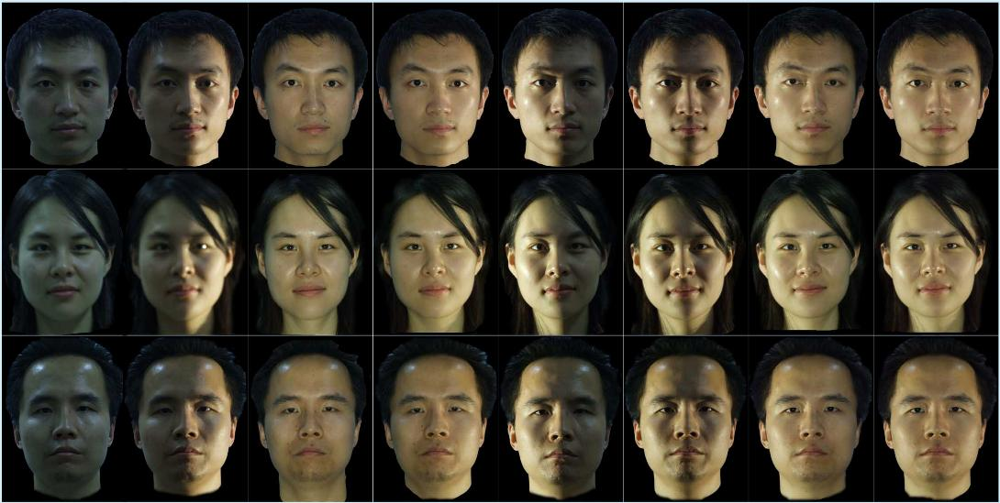
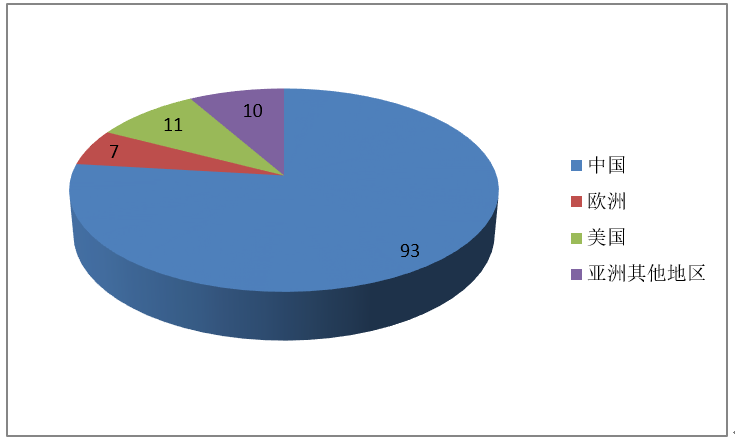
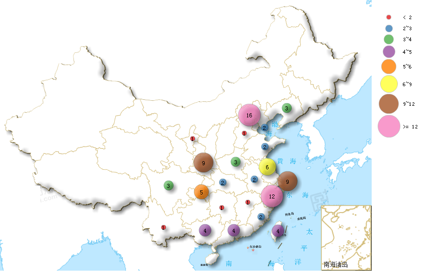
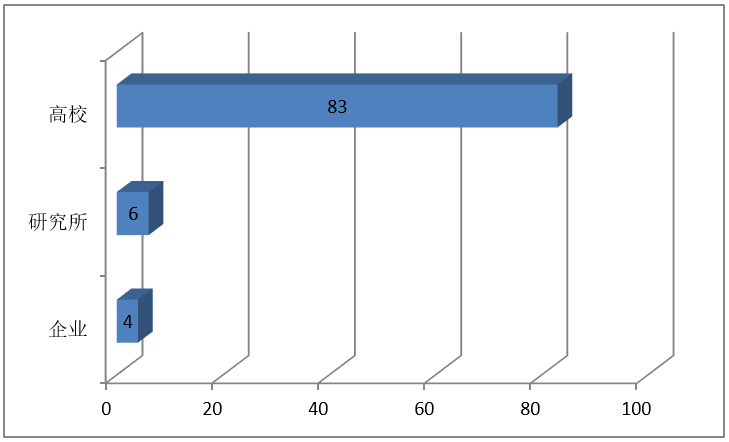
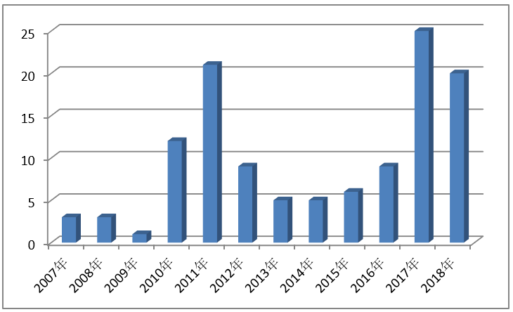
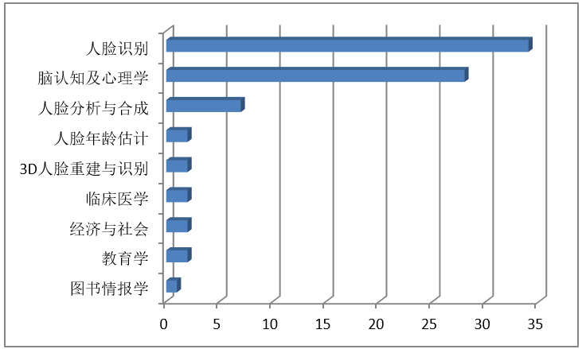

简介
东方人脸数据库(Oriental Facial Database, OFD)包含视点和光照两个子库，共采集并整理了1247位志愿者的33669幅人脸图像，每位志愿者拍摄19张视点图像和8张光照图像。
采集环境配置

多角度CCD/数码相机拍摄
系统布置在一个5×5×2.5M3的3D房间中。编号从0～18的19台松下MDC-FZ30数码照相机安装在支架上成等角度分布。照相机的分布示意图如图2所示。升降椅放在C9水平延长线和C0、C18连线的焦点处，距离C9为2.0M。被采集对象坐在升降椅中心位置，通过调整椅子的高度使被采集人的双眼高度为1.3M且正对C9数码相机。为了防止被拍摄人摆动头部影响拍摄角度，升降椅后面增加了一个头托，以便固定拍摄对象的头部。

多光源分布配置
为了获得均匀一致的自然环境光，同时为了便于控制，我们完全遮挡了室外光线，利用柔光箱和室内顶灯来完全模拟自然光照环境。图2所示，4台60×60CM正丰BTE-150D柔光箱（D0～D3）依次放置在被采集对象两侧以及正前方，距离拍摄者1.8M。D0～D2向上倾斜45度，D3向下倾斜45度，充分保证了光线均匀散射在被拍摄者的面部，具有很强的方向性。屋顶布置5盏灯D4～D8来模拟顶光，消除被拍摄者额头的出现的阴影。D4～D7安装在屋顶四个角落，D8则安装在被拍摄者头顶正上方，均采用带罩65W节能灯。多光源分布环境使得我们在暗室环境下也能拍摄到真实感很强的人脸面部图像。
视点子库介绍
在环境光照模式下，要求被拍摄者眼睛平视正前方的C9相机，调节升降椅的高度使其双眼高度为1.3M。多角度照相机系统一次拍摄，可同时获得19张（10°为一个单位）不同视点角度下的图像。视点子库示例图像如下图所示。


光照子库介绍
光照子库采用单相机进行拍摄。在大自然和人们日常生活工作中，有各种光照变化。我们模拟了正面人脸的8种不同光照组合，包括正面来光、左侧面来光、右侧面来光以及这三种光的各种组合。使用3盏卤素射灯（L0～L2）作为点光源来实现8种不同的光照组合。并专门设计了一个灯光控制电路来分别控制L0～L2的8种不同开关组合状态，来模拟不同的光照条件。示例图像如下：

本数据库用户分布情况
本数据库自2007年发布以来，在世界范围内获得广泛关注与认可。目前国内外使用用户数量已逾120个（统计至2018年底），遍及东西亚、北美、欧、澳等洲，包括众多知名大专院校及科研机构。其中国内用户包括清华大学、浙江大学、上海交通大学、中科院自动化所等，国际用户包括卡耐基梅隆大学、哈佛医学院、米兰大学、日本理化研究所等，具有重要的国内外学术影响力。
全球用户数量分布图

国内用户数量分布图

用户所属机构属性 
年申请用户数量历史图 
研究用途及学科分布 
如何获取本库
OFD东方人脸数据库可开放申请下载，高校教师可免费申请本库用于学术和科研目的，企业用户可有偿申请使用本库。步骤如下：
1. 向管理员email一份扫描版的数据库申请书。申请书应使用具有申请人所属机构抬头的正式信纸；应盖有所属机构的印章（或申请人的手写签名）；简要说明拟使用本库的研究方向或用途。如果你在中国大陆，请用中文申请。
2.下载协议书，认真填写并将扫描版email给管理员。注意协议注明必须是全职工作人员签名（学生签名无效）。
3. 我们在收到完整的上面两份扫描文件后，将审核您的申请。审核通过后，将通过email方式告知您下载方式及密码信息。
4. 依托本库所发表的学术论文，请注明所引用的数据库为西安交通大学人工智能与机器人研究所（IAIR）东方人脸库。 如需申请下载本数据库，请联系刘老师jyliu@mail.xjtu.edu.cn。